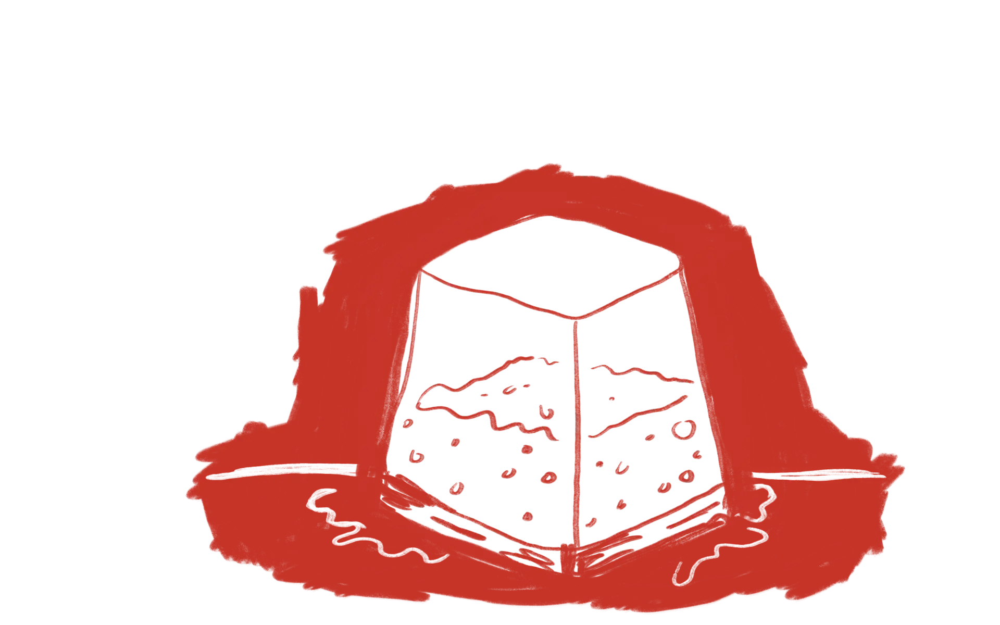

Vi bager frisk brød hver dag.
Søren er uddannet i det franske køkken, men har en kærlighed for dansk bagværk og har altid bagt meget. Derfor har vi valgt at fokusere på surdejsbrød.
Se vores proces bag surdejen:
Trin 1
Surdejen fermenterer i mindst 48 timer for at sikre god smag.
Trin 1
Herefter strækker og folder vi dejen sådan vi får lufttige brød
Trin 1
Til sidst bager vi brødet i ovnen ved høj intens varme